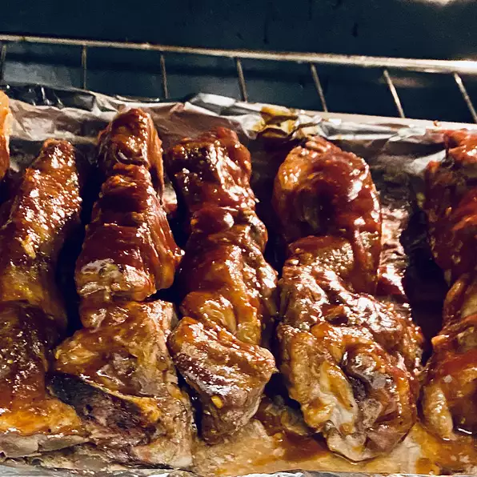

BBQ country style ribs

Descrptions
Pork ribs are a cut of pork popular in Western and Asian cuisines. The ribcage of a domestic pig, meat and bones together, is cut into usable pieces, prepared by smoking, grilling, or baking usually with a sauce, often barbecue and then served.
Ingredients
- 10 country style pork ribs
- 2 teaspoons mince garlic
- 1 medium lemon, thinly sliced
- 1 (18 ounce) bottle barbecue sauce
Directions/Instructions
Step 1
- Preheat the oven to 250 degrees F (120 degrees C).
Step 2
- Place ribs in a single layer in a shallow baking pan or roaster; salt if desired. Spread garlic on ribs, then arrange lemon slices on top.
Step 3
- Bake in the preheated oven until tender, about 2 hours. Drain any grease and liquid. Pour barbeque sauce over ribs.
Step 4
- Reduce oven temperature to 225 degrees F (110 degrees C) and cook ribs until sauce bakes into meat, about 1 hour.